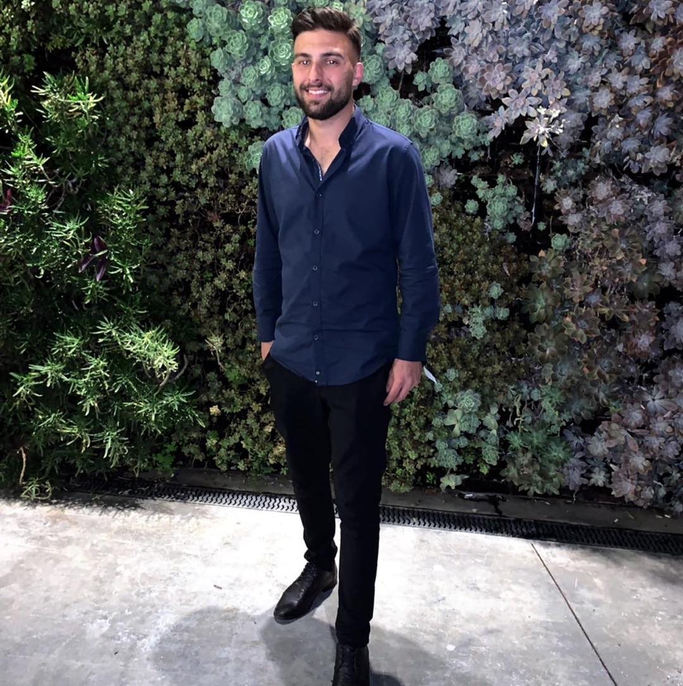

Nir Avitbul - IT Professional and Software Engineering Student

Summary
Two years of experience in IT and technical support. Computer technician, MCSA network manager, and software engineering student. Quick learner, responsible, with experience in managing people and large projects. Seeking a challenging IT position in a large tech company.
Education
- 2023: Computer and Network Technician Course, Practical College Rishon LeZion - Computer Technician Certificate
- 2023: Linux Course, Practical College Rishon LeZion - Certificate Studies
- 2022-2023: Network Management Course, MCSA Certification, Practical College Rishon LeZion
- 2021-Present: Software Engineering, ORT College Rehovot (Evening Studies)
- 2016-2017: Cellular Technician Course, Lapid College Ashdod - iOS & Android Technician Certificate
Work Experience
- 2013-Present: Daylite 2005 Ltd. - IT and Technical Support (2022-Present)
- Supervision of IT infrastructure including servers, networks, and software/hardware systems.
- Experience with Active Directory, Exchange, DNS, TCP/IP.
- Technical support for approximately 45 end-users.
- Implementation and maintenance of technological solutions.
- Management of 20 laptops including installations and upgrades.
- Reduced computing costs by 15%.
- Established a new department, creating order, organization, and optimizing work processes.
- 2018-2022: Plant Manager
- Operational management and daily plant supervision.
- Ensured product quality and compliance with standards.
- Managed a team of technicians and operators across three production lines.
- Significant cost reduction in production, increasing operational profit by 20%.
2017-2018: Partner Communications Company Ltd. - Technical Support Representative
- Provided technical support and customer service in a call center environment.
- Diagnosed and resolved communication issues, including router and protocol troubleshooting.
- Exceeded service and sales targets, achieving high customer satisfaction.
Proficient in Office applications, internet, and social networks, including ERP.
Programming languages: HTML, CSS, JavaScript, Java, Python, C#.
Operating Systems: Windows, Linux, Windows Server.
Database Systems: SQL, MySQL.